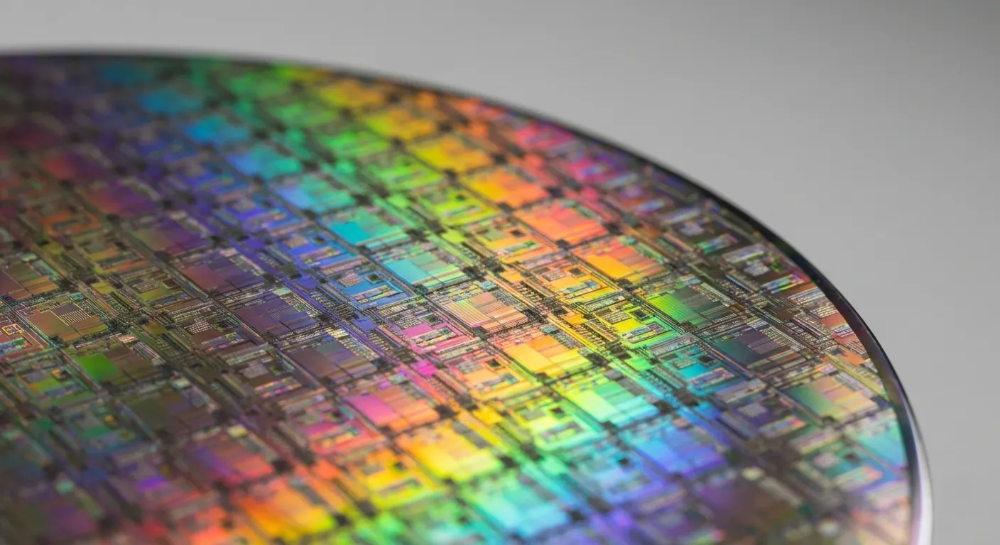

2026年に入り、半導体産業はAI・自動運転・再生可能エネルギー・データセンターなど多様な分野で不可欠な基盤となり、世界市場規模は1兆ドルに迫る勢いです。その製造工程は極めて複雑かつ高度であり、各工程ごとに専門性の高い企業がグローバルに活躍しています。
本記事では設計からパッケージング、材料、装置、後工程まで、主要な製造プロセスごとに日本・米国・韓国・TSMC（台湾）を中心とした関連上場企業（銘柄）を徹底解説します。各工程の概要とともに、関連企業の役割や強み、なぜその工程で重要なのかを詳しく解説し、投資家・業界関係者・半導体に興味のある方に向けて、2026年時点での最新動向とともにお届けします。
目次
半導体製造工程の全体像
半導体製造は大きく「前工程（ウエハ上への回路形成）」と「後工程（チップ化・パッケージング）」に分かれます。さらに、設計・材料・装置・検査・テストなど多層的なサプライチェーンが存在します。それぞれの工程で世界トップシェアを持つ企業が存在し、日本・米国・韓国・台湾（TSMC）がグローバル競争を繰り広げています。
1. 設計（Design/EDA）工程と関連銘柄
半導体チップの設計図をつくる工程です。回路の論理設計、配線の配置、電力・熱・信号遅延などのシミュレーション、フォトマスクデータ（半導体製造において使用される微細な回路パターンを基板に転写するためのデータ）の生成を主に行います。建物で言えば「建築設計図」にあたります。ここが間違うと後工程が全部やり直しになるため、極めて重要なプロセスです。
設計分野は米国企業が圧倒的なシェアを持ち、NVIDIA・AMD・Intel・Qualcomm・Appleなどが最先端チップを設計しています。EDAツール（半導体設計を支える設計自動化ソフトウェア）はSynopsysとCadenceが寡占し、ARMはCPUアーキテクチャの標準です。
| 企業名 | 国 | 主な役割・強み | なぜ重要か |
|---|---|---|---|
| NVIDIA | 米国 | GPU・AIアクセラレータ設計 | AI半導体の絶対的リーダー |
| AMD | 米国 | CPU・GPU・AIチップ設計 | サーバー・PC向けで高い存在感 |
| Intel | 米国 | CPU・FGPA設計、製造も展開 | x86 CPUの巨人、設計・製造両面で影響力 |
| Qualcomm | 米国 | スマホ向けSoC設計 | モバイルSoC「Snapdragon」の覇者 |
| Apple | 米国 | 独自設計SoC（Mシリーズ等） | 自社製品向けに特化した最先端設計 |
| Synopsys | 米国 | EDAツール・IPコア | 設計自動化ツールで世界最大手 |
| Cadence | 米国 | EDAツール | 設計自動化ツールで世界2位 |
| ARM | 英国 | CPUアーキテクチャIP | モバイル・IoT・サーバー向けで標準 |
| ソシオネクスト | 日本 | ファブレスSoC設計 | 映像・通信・車載向けSoCで成長 |
| ルネサスエレクトロニクス | 日本 | 車載・産業向けMCU/SoC設計 | 車載半導体で世界有数 |
| Samsung Electronics | 韓国 | メモリ・ロジック設計 | メモリ設計力とファウンドリ事業 |
| SK hynix | 韓国 | メモリ設計 | DRAM・NAND設計 |
| TSMC | 台湾 | 設計支援（Design Enablement） | 顧客の設計最適化をサポート |
2. マスク・レチクル工程と関連銘柄
マスク・レチクル製造は、設計データをもとに露光工程で使う「ガラスの型」を作る工程です。チップの原版にあたり、設計と前工程をつなぐ極めて重要なプロセスです。1枚の品質がウエハー上の何千ものチップの良否を左右します。
フォトマスクは、回路パターンが描かれた「原版」のようなものです。このフォトマスクに光を通し、レンズで縮小してシリコンウエハ上に照射することで、極めて微細な回路を転写します。写真の現像でいう「原版」にあたる、極めて精密な部品です。
フォトマスク市場はテクセンド（旧トッパン）と大日本印刷が日本勢の二大巨頭。Photronicsが米国・アジアで展開。HOYA・信越化学はマスクブランクスで世界トップクラス。EUV対応・高精度化が今後の成長分野です。
| 企業名 | 国 | 主な役割・強み | なぜ重要か |
|---|---|---|---|
| テクセンド（旧トッパン） | 日本 | フォトマスク外販市場で世界首位 | グローバル拠点、EUVマスク対応 |
| 大日本印刷（DNP） | 日本 | フォトマスク・マスクブランクス | 高度な微細加工技術、サプライチェーン強化 |
| Photronics | 米国 | 外販フォトマスク世界2位 | 北米・アジアで強い顧客基盤 |
| HOYA | 日本 | マスクブランクス世界トップクラス | 高純度石英ガラス、EUV対応 |
| 信越化学工業 | 日本 | マスクブランクス上位供給 | 高精度材料（OMOG等）の安定供給 |
3. 前工程（ウェハ加工）
ここが半導体製造の本丸で、シリコンウェハの上に回路を何十層にも積み重ねていく工程です。微細化が進むにつれ、その難易度は飛躍的に高まっています。
3-1. ウエハ製造工程と関連銘柄
シリコンウエハは半導体の「土台」です。シリコンの塊を円盤状に加工し、表面を鏡のように磨き上げます。ウエハの品質は最終チップの性能・歩留まりに直結します。300mmウエハが主流ですが、近年はSiC・GaNなどパワー半導体向け新素材も注目されています。
↓シリコンウエハのイメージ

市場は日本の信越化学工業とSUMCOが世界シェアの過半数を占める「日本勢の独壇場」です。最先端ファブも日本勢の高純度ウエハに依存しています。ウエハの大口径化・高純度化・新素材対応が今後の成長ドライバーです。
| 企業名 | 国 | 主な役割・強み | なぜ重要か |
|---|---|---|---|
| 信越化学工業 | 日本 | シリコンウエハ世界最大手 | 300mmウエハの安定供給、最先端対応 |
| SUMCO | 日本 | シリコンウエハ世界2位 | 先端ウエハ供給、再生ウエハも強み |
| GlobalWafers | 台湾 | 世界3位、欧米市場にも強い | 買収で規模拡大、TSMC等に供給 |
| SK siltron | 韓国 | 韓国最大手 | 韓国ファブ向けシェアとグループ内需要 |
| Siltronic | ドイツ | 高品質ウエハ、欧州拠点 | 欧州・グローバル展開の強み |
| ローム | 日本 | SiCウエハ（SiCrystal社） | EV・再エネ向けパワー半導体用リーダー |
3-2. 成膜と関連銘柄
ウェハの上に薄い膜（絶縁膜や金属膜）を形成する工程です。ウェハの上に均一な薄い層をスプレーで吹き付けるイメージです。CVD、PVD、ALD（原子層堆積）など多様な手法があり、微細化・3D化に伴い高精度・高均一性が求められます。
成膜装置はアプライドマテリアルズ（AMAT）、ラムリサーチ、そして日本の東京エレクトロンが「世界三強」として君臨しています。日本の中堅メーカーも有機EL・太陽電池・MEMS等で存在感。成膜技術の進化は微細化・3D化・パワー半導体対応に不可欠です。
| 企業名 | 国 | 主な役割・強み | なぜ重要か |
|---|---|---|---|
| アプライドマテリアルズ | 米国 | 成膜装置世界最大手（総合力） | PVD・CVD・ALD等での幅広い対応力 |
| ラムリサーチ | 米国 | CVD・ALD・電解メッキ | 先端メモリ・ロジック向け高精度成膜 |
| 東京エレクトロン | 日本 | ALD・CVD・PVD装置で世界上位 | バッチ式ALD等独自技術、高生産性 |
| 昭和真空 | 日本 | 真空蒸着装置、スパッタ装置 | 有機EL・半導体向け特有プロセス |
| 長州産業 | 日本 | 蒸着・スパッタ装置 | 太陽電池や有機デバイス向け実績 |
| コメット | 日本 | マグネトロンスパッタ装置 | 多元成膜・自動化技術 |
3-3. 露光（フォトリソグラフィ）と関連銘柄
光を使って回路パターンを焼き付ける工程です。「写真の焼き付け」や「スタンプで模様を押す」イメージです。EUV（極端紫外線）露光装置の登場により、2nm以下の微細化が可能になりました。装置だけでなく材料の感光材（フォトレジスト）の品質も極めて重要です。
EUV露光装置はオランダのASMLが事実上の独占企業で、TSMC・Samsung・Intel・Rapidusといった最先端の半導体メーカーには欠かせない装置です。一方、日本メーカーはEUVではなく、ArF液浸やArFドライといった1世代前の露光装置で独自の強みを築いています。東京エレクトロンは、EUV露光に必要な塗布・現像装置で世界シェアほぼ100%を握っており、EUV時代でも存在感は圧倒的です。さらに、露光工程で使うフォトレジスト（感光材）は、東京応化、JSR、信越化学、住友化学、富士フイルムの日本5社で世界シェア約9割。EUV対応の高性能レジストをめぐって、各社の技術競争が激しく進んでいます。
| 企業名 | 国 | 主な役割・強み | なぜ重要か |
|---|---|---|---|
| ASML | オランダ | EUV露光装置で世界独占 | 2nm以下の微細化に不可欠（シェア100%） |
| ニコン | 日本 | ArF液浸露光装置 | ASML互換機含む先端・成熟プロセス両対応 |
| キヤノン | 日本 | ArFドライ露光装置 | 成熟プロセスや特定用途向け独自技術 |
| 東京エレクトロン | 日本 | コータ/デベロッパ（塗布現像） | EUV用塗布現像装置でシェアほぼ100% |
| ギガフォトン | 日本 | リソグラフィ用光源 | ASML等露光装置メーカーへの重要供給元 |
| 東京応化工業 | 日本 | フォトレジスト（EUV含む） | EUVレジスト市場でのリーダーシップ |
| JSR | 日本 | フォトレジスト世界首位級 | 金属レジスト等、先端プロセス材料の先端 |
| 信越化学工業 | 日本 | フォトレジスト、ウエハ供給 | 先端材料の垂直供給体制 |
| 住友化学 | 日本 | 液浸ArFレジスト高シェア | メモリ（DRAM等）向けでの高い依存度 |
| 富士フイルム | 日本 | ネガ型レジスト、CMP材料等 | 材料面での総合的なソリューション能力 |